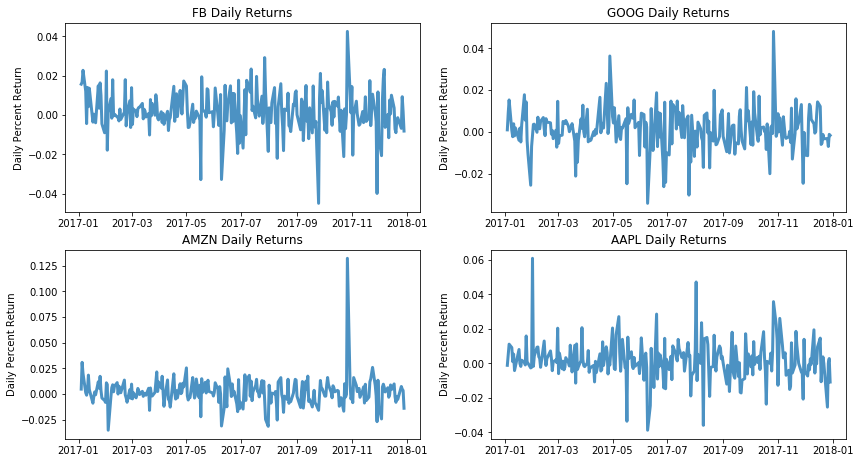
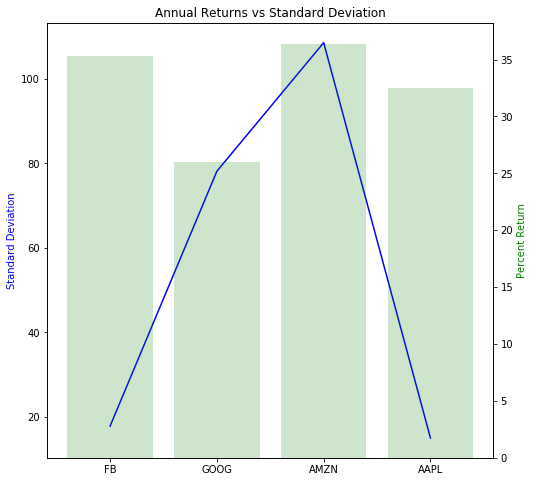
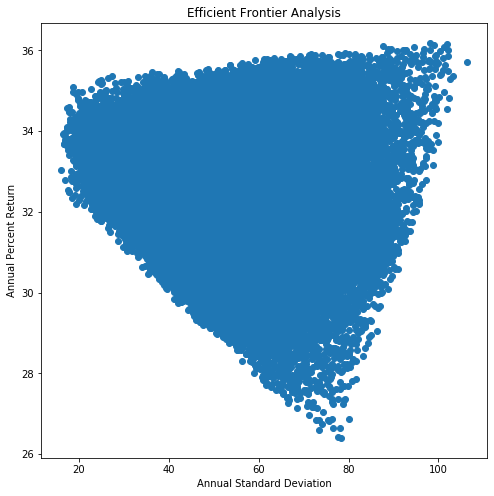

Efficient Frontier Analysis
Price Performance Over Time
The goal of the efficient frontier analysis is to balance a portfolio in such a way that returns will be maximized while eliminating the portfolio volatility. Figure 1, below shows the historical prices for the stocks you have selected from 2017-01-03 to 2017-12-29. This will give you an overall sense of the health of the company.
AMZN ($1169.47) is the most valuable stock in your portfolio
AAPL ($169.23) is the least valuable stock in your portfolio.

Daily Percent Return
Figure 2, shows the daily returns for the stocks you have selected. Large negative fluctuations in daily percent return may influence your portfolios ability to make steady returns.

Your Portfolio's Yearly Standard Deviation and Percent Return
Figure 3 compares the average yearly percent return with the average yearly standard deviation. It can be expected that a stock that has a high rate of return and a low standard deviation will compose the majority of your efficient frontier portfolio.
The following stocks in your portfolio performed below the average yearly return (32.55%): GOOG, AAPL.

| Stock | Standard Deviation | Percent Return |
|---|---|---|
| FB | 17.75 | 35.3 |
| GOOG | 78.16 | 25.95 |
| AMZN | 108.63 | 36.4 |
| AAPL | 14.93 | 32.54 |
Your Portfolio's Efficient Frontier
Figure 4, is a graph of your efficient frontier. The point of inflection is the location where your portfolio will minimize its volatility over the interval 2017-01-03 to 2017-12-29. The table below shows the optimized portfolios for the timer interval selected.

| Portfolio Optimization | FB Weight | GOOG Weight | AMZN Weight | AAPL Weight | PercentReturn | StandardDeviation |
|---|---|---|---|---|---|---|
| Minimize Volatility | 0.18 | 0.0 | 0.01 | 0.81 | 33.04 | 16.04 |
| Maximize Return | 0.1 | 0.0 | 0.88 | 0.02 | 36.19 | 98.04 |